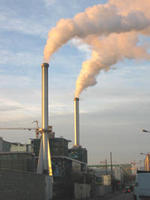
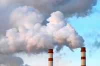
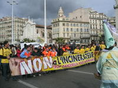

L'incinération touche le mythe du feu de nos esprits et apparaît ainsi comme une solution miracle pour se débarrasser de nos déchets... Mais, il n'en est rien, parce qu'un incinérateur transforme nos déchets en d'autres déchets certes plus discrets parce que dilués ou concentrés, mais pourtant hautement toxiques : fumées, poussières et résidus sont rejetés dans l'air, mais aussi et surtout « stockés » sous nos routes (c'est-à-dire dans l'environnement) ou stocké dans des décharges de « première classe » (c'est-à-dire très cher pour être capables de confiner ces déchets dont aucun lieu vivant de la planète ne veut). D'autre part, un grand projet d'incinérateur-usine est un engagement d'une ou plusieurs villes à fournir un tonnage précis de déchets, en cela il tend à s'opposer au développement pourtant essentiel du recyclage. |
 |
Nous sommes pourtant capables de penser plus intelligemment la gestion des déchets sur notre territoire.
|  | Les décideurs, acteurs et citoyens peuvent à l'échelle de leur département concevoir en concertation un « Plan départemental d'élimination des déchets ménagères et assimilés » (PDEDMA). Cette voie est à choisir pour permettre d'intégrer toute les problématiques des déchets, que ce soit ceux des entreprises ou des particuliers et de choisir à fond le recyclage comme logique écologique et économique. Les territoires doivent pour leur avenir choisir les technologies innovantes du recyclage et une nature saine pour leurs habitants et leurs visiteurs. |
Pour faire comprendre les aberrations de l'incinération face à une gestion intégrée des déchets à l'échelle du territoire, le WWF s'associe avec le Cniid et Ecoforum pour alerter des dangers et des alternatives possibles.
Le WWF engage également des actions juridiques pour s'opposer par exemple aux recours déposé contre le PDEDMA des Bouches-du-Rhône pour empêcher ce projet d'être choisi à la place de l'incinérateur que la ville de Marseille souhaite construite à Fos-sur-Mer. Une petite anecdote illustrant cette bataille est le blocage des travaux de construction du projet d'incinération grâce aux énergies d'associations locales et à un constat d'huissier commandée par le WWF. Celui-ci mettait en évidence la présence du lys maritime, une espèce de fleur protégée dans la région et qui n'avait pas été mentionné dans l'étude d'impact du projet d'incinérateur. |
 |